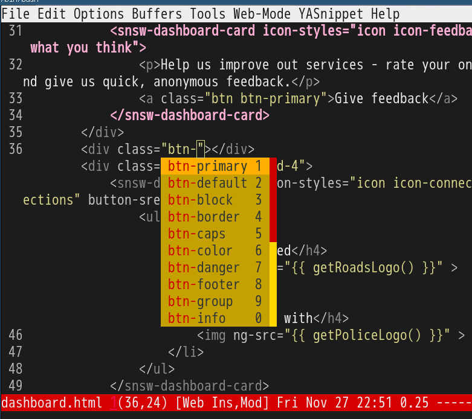

Emacs auto-completion for non-programmers
CREATED:
UPDATED:
That's easy if you use company-mode.
Say if you want to complete words ONLY in org-mode,
(require 'company)
(add-hook 'after-init-hook 'global-company-mode)
;; Don't enable company-mode in below major modes, OPTIONAL
(setq company-global-modes '(not eshell-mode comint-mode erc-mode rcirc-mode))
;; "text-mode" is a major mode for editing files of text in a human language"
;; most major modes for non-programmers inherit from text-mode
(defun text-mode-hook-setup ()
;; make `company-backends' local is critcal
;; or else, you will have completion in every major mode, that's very annoying!
(make-local-variable 'company-backends)
;; company-ispell is the plugin to complete words
(add-to-list 'company-backends 'company-ispell)
;; OPTIONAL, if `company-ispell-dictionary' is nil, `ispell-complete-word-dict' is used
;; but I prefer hard code the dictionary path. That's more portable.
(setq company-ispell-dictionary (file-truename "~/.emacs.d/misc/english-words.txt")))
(add-hook 'text-mode-hook 'text-mode-hook-setup)
(defun toggle-company-ispell ()
(interactive)
(cond
((memq 'company-ispell company-backends)
(setq company-backends (delete 'company-ispell company-backends))
(message "company-ispell disabled"))
(t
(add-to-list 'company-backends 'company-ispell)
(message "company-ispell enabled!"))))
`M-x toggle-company-ispell` to toggle company-ispell in any major mode.
"english-words.txt" is just a plain text file where lines sorted alphabetically. Every line is a word.
You can download my english-words.txt.
Code completion for HTML/JS/CSS in Emacs
CREATED:
UPDATED:
Now company-mode is popular in Emacs users. It supports code completion out of box.
Its company-etags.el can use TAGS created by ctags/etags.
Setup is easy.
Step 1, create TAGS:
cd ~/myproj/script; ctags -e '*.js'; cd ~/myproj/style; ctags -e '*.css'
Step 2, add below code into "~/.emacs.d/init.el":
(setq tags-table-list (list "~/myproj/script/TAGS" "~/myproj/style/TAGS"))
That's OK for most programming languages.
But not enough for web developers who use web-mode.
First, you need upgrade web-mode to latest version so that when inputting "btn-" or "data-" code completion still works.
Second, you need add below code into your "~/.emacs.d/init.el",
(eval-after-load 'company-etags
'(progn
(add-to-list 'company-etags-modes 'web-mode)))
You need above setup because web-mode conditionally inherit from prog-mode. You can `M-x eval-expression (derived-mode-p 'prog-mode)` to test whether current mode inherits from prog-mode. Thanks for Dmitry Gutov pointing out that js2-mode actually inherits from prog-mode because it inherits from js-mode which inheris from prog-mode.
Another issue is company-etags.el disables code completion in string and comment by default. We need remove this feature in web-mode temporarily,
(eval-after-load 'company
'(progn
;; @see https://github.com/redguardtoo/emacs.d/commit/2ff305c1ddd7faff6dc9fa0869e39f1e9ed1182d
(defadvice company-in-string-or-comment (around company-in-string-or-comment-hack activate)
(if (memq major-mode '(php-mode html-mode web-mode nxml-mode))
(setq ad-return-value nil)
ad-do-it))))
Tested on Emacs23.4 and Emacs24.4.
Screenshot of my setup:

Use js2-mode to print json path
CREATED:
UPDATED:
These days most web applications are based on RESTful.
So javascript developers have to deal with JSON frequently.
When working on JSON, the most boring and error prone task is to get the full path of specific field.
For example, given the JSON response like:
{
key1: {
subkey1: {
arr1: [{ key3: 'hello'}]
}
}
}
The developer need figure out the full path of "key3" which is "key1.subkey1.arr1[0].key3".
My solution is to take advantage of AST created by js2-mode.
Step 1, insert below code into ~/.emacs,
;; {{ print json path, will be removed when latest STABLE js2-mode released
(defun js2-get-element-index-from-array-node (elem array-node &optional hardcoded-array-index)
"Get index of ELEM from ARRAY-NODE or 0 and return it as string."
(let ((idx 0) elems (rlt hardcoded-array-index))
(setq elems (js2-array-node-elems array-node))
(if (and elem (not hardcoded-array-index))
(setq rlt (catch 'nth-elt
(dolist (x elems)
;; We know the ELEM does belong to ARRAY-NODE,
(if (eq elem x) (throw 'nth-elt idx))
(setq idx (1+ idx)))
0)))
(format "[%s]" rlt)))
(defun js2-print-json-path (&optional hardcoded-array-index)
"Print the path to the JSON value under point, and save it in the kill ring.
If HARDCODED-ARRAY-INDEX provided, array index in JSON path is replaced with it."
(interactive "P")
(let (previous-node current-node
key-name
rlt)
;; The `js2-node-at-point' starts scanning from AST root node.
;; So there is no way to optimize it.
(setq current-node (js2-node-at-point))
(while (not (js2-ast-root-p current-node))
(cond
;; JSON property node
((js2-object-prop-node-p current-node)
(setq key-name (js2-prop-node-name (js2-object-prop-node-left current-node)))
(if rlt (setq rlt (concat "." key-name rlt))
(setq rlt (concat "." key-name))))
;; Array node
((or (js2-array-node-p current-node))
(setq rlt (concat (js2-get-element-index-from-array-node previous-node
current-node
hardcoded-array-index)
rlt)))
;; Other nodes are ignored
(t))
;; current node is archived
(setq previous-node current-node)
;; Get parent node and continue the loop
(setq current-node (js2-node-parent current-node)))
(cond
(rlt
;; Clean the final result
(setq rlt (replace-regexp-in-string "^\\." "" rlt))
(kill-new rlt)
(message "%s => kill-ring" rlt))
(t
(message "No JSON path found!")))
rlt))
Step 2, move the cursor over the key/value of the field and `M-x js2-print-json-path`.
My code is merged into js2-mode. You need only install latest js2-mode.
Evil text object to select nearby file path
CREATED:
UPDATED:
Insert below code into ~/.emacs:
;; {{ nearby file path as text object,
;; - "vif" to select only basename
;; - "vaf" to select the full path
;;
;; example: "/hello/world" "/test/back.exe"
;; "C:hello\\hello\\world\\test.exe" "D:blah\\hello\\world\\base.exe"
;;
;; tweak evil-filepath-is-nonname to re-define a path
(defun evil-filepath-is-separator-char (ch)
"Check ascii table"
(let (rlt)
(if (or (= ch 47)
(= ch 92))
(setq rlt t))
rlt))
(defun evil-filepath-not-path-char (ch)
"Check ascii table for charctater "
(let (rlt)
(if (or (and (<= 0 ch) (<= ch 32))
(= ch 34) ; double quotes
(= ch 39) ; single quote
(= ch 40) ; (
(= ch 41) ; )
(= ch 60) ; <
(= ch 62) ; >
(= ch 91) ; [
(= ch 93) ; ]
(= ch 96) ; `
(= ch 123) ; {
(= ch 125) ; }
(= 127 ch))
(setq rlt t))
rlt))
(defun evil-filepath-char-not-placed-at-end-of-path (ch)
(or (= 44 ch) ; ,
(= 46 ch) ; .
))
(defun evil-filepath-calculate-path (b e)
(let (rlt f)
(when (and b e)
(setq b (+ 1 b))
(when (save-excursion
(goto-char e)
(setq f (evil-filepath-search-forward-char 'evil-filepath-is-separator-char t))
(and f (>= f b)))
(setq rlt (list b (+ 1 f) (- e 1)))))
rlt))
(defun evil-filepath-get-path-already-inside ()
(let (b e)
(save-excursion
(setq b (evil-filepath-search-forward-char 'evil-filepath-not-path-char t)))
(save-excursion
(setq e (evil-filepath-search-forward-char 'evil-filepath-not-path-char))
(when e
(goto-char (- e 1))
;; example: hello/world,
(if (evil-filepath-char-not-placed-at-end-of-path (following-char))
(setq e (- e 1)))
))
(evil-filepath-calculate-path b e)))
(defun evil-filepath-search-forward-char (fn &optional backward)
(let (found rlt (limit (if backward (point-min) (point-max))) out)
(save-excursion
(while (not out)
;; for the char, exit
(if (setq found (apply fn (list (following-char))))
(setq out t)
;; reach the limit, exit
(if (= (point) limit)
(setq out t)
;; keep moving
(if backward (backward-char) (forward-char)))))
(if found (setq rlt (point))))
rlt))
(defun evil-filepath-extract-region ()
"Find the closest file path"
(let (rlt b f1 f2)
(if (and (not (evil-filepath-not-path-char (following-char)))
(setq rlt (evil-filepath-get-path-already-inside)))
;; maybe (point) is in the middle of the path
t
;; need search forward AND backward to find the right path
(save-excursion
;; path in backward direction
(when (setq b (evil-filepath-search-forward-char 'evil-filepath-is-separator-char t))
(goto-char b)
(setq f1 (evil-filepath-get-path-already-inside))))
(save-excursion
;; path in forward direction
(when (setq b (evil-filepath-search-forward-char 'evil-filepath-is-separator-char))
(goto-char b)
(setq f2 (evil-filepath-get-path-already-inside))))
;; pick one path as the final result
(cond
((and f1 f2)
(if (> (- (point) (nth 2 f1)) (- (nth 0 f2) (point)))
(setq rlt f2)
(setq rlt f1)))
(f1
(setq rlt f1))
(f2
(setq rlt f2))))
rlt))
(evil-define-text-object evil-filepath-inner-text-object (&optional count begin end type)
"File name of nearby path"
(let ((selected-region (evil-filepath-extract-region)))
(if selected-region
(evil-range (nth 1 selected-region) (nth 2 selected-region) :expanded t))))
(evil-define-text-object evil-filepath-outer-text-object (&optional NUM begin end type)
"Nearby path"
(let ((selected-region (evil-filepath-extract-region)))
(if selected-region
(evil-range (car selected-region) (+ 1 (nth 2 selected-region)) type :expanded t))))
(define-key evil-inner-text-objects-map "f" 'evil-filepath-inner-text-object)
(define-key evil-outer-text-objects-map "f" 'evil-filepath-outer-text-object)
;; }}
柬埔寨名汤(Sgow Chrouk Soup)
视频教程: https://www.youtube.com/watch?v=Aclyh2c_BEs
备料
- 两人份冷水
- 米少许(半茶勺)
- 香茅一根
- 南姜(Galangal)一小块
- 洋葱一个
- 大蒜二瓣
- 鸡精二茶勺
- 糖(最好棕榈糖,因为有香味)半茶勺
- 九层塔(薄荷)一把
- 鲜红辣椒两到三根
步骤
- 鸡胸脯肉切成小块,盐过一下三四分钟,洗净刀和板
- 烧开水
- 香茅洗净,折成多段.南姜先去皮再洗净切成薄片.米洗净,大蒜拍扁,洋葱切好
- 待水滚放入香茅,南姜,米,大蒜,洋葱(增加甜味)
- 在水再次滚前,摘薄荷叶,放入大碗淘洗多次再沥干,切成细丝(让香味挥发).辣椒洗净切碎.柠檬切成长条.前述三种料分门别类放入一盘中.
- 选部份柠檬挤汁入一小碟子中
- 这时水已滚,加鸡精调味至满意,放入鸡肉(海鲜也可以):
- 一分钟水滚后,尝一下鸡肉是否熟了.汤的口味,加入糖(略有甜味即可),如果口味淡了,可最后加入鸡精
- 关火,撒入少量辣椒末,薄荷,葱
上菜
- 准备大碗,放入薄荷,葱,适量柠檬汁,倒汤
- 柬埔寨神秘香菜(可选)
- 可加少量鱼露调咸味
Emacs speed up 1000%
I'm still NOT satisfied with my Emacs performance after applying below tricks:
- autoload packages
- idle-load packages
- compiling *.el to *.elc
After some research, I found I could make my Emacs 1000% fast in 1 minute.
Please note I'm talking about the general performance not just startup time.
The solution is really simple.
Since I'm a Linux guy and my computer got enough (24G) memory. I can place my setup on memory only.
Step 1, insert below line into /etc/fstab and restart computer:
tmpfs /tmp tmpfs nodev,nosuid,size=8G 0 0
Step 2, run the script "emacs2ram":
#!/bin/sh
if [ -z "$1" ];then
echo "Usage:"
echo " emacs2ram start"
echo " emacs2ram restore"
exit 1
fi
if [ "$1" == "start" ];then
backup=emacs.d-backup
link=.emacs.d
volatile=/tmp/.emacs.d-$USER
IFS=
set -efu
cd ~/
if [ ! -r $volatile ]; then
mkdir -m0700 $volatile
fi
# link -> volatie does not exist
if [ "$(readlink $link)" != "$volatile" ]; then
# backup project at first
mv $link $backup
# create the link
ln -s $volatile $link
fi
if [ -e $link/.unpacked ]; then
echo "Sync .emacs.d from memory to backup ..."
rsync -avq --delete --exclude .unpacked ./$link/ ./$backup/
echo "DONE!"
else
echo "Sync .emacs.d from disk to memory ..."
rsync -avq ./$backup/ ./$link/
touch $link/.unpacked
echo "DONE!"
fi
else
echo "Moving .emacs.d back to disk ..."
backup=$2-backup
link=$2
volatile=/tmp/$2-$USER
cd ~/projs
rm $link && mv $backup $link && rm -rf $volatile
echo "DONE!"
fi
That's all! Please enjoy Emacs as usual.
The original script is from ArchLinux Wiki. I learned this technique eight years ago. I'm just wondering why I need eight years to apply it?
BTW, I've also moved all my projects into memory, using similar scripts.
UPDATE: I also publicize my project-managing script at gist. It's almost same as emacs2ram.
Use git-timemachine with Evil
git-timemachine is simple.
After "M-x git-timemachine", a new read-only buffer is created and I need only use six key bindings: "n", "q", "p", "w", "W", "g".
The problem is I'm using Evil. How to make git-timemachine's key bindings override Evil's?
I consulted the issue with Frank Fischer.
The solution is simple. Insert below code into ~/.emacs:
;; @see https://bitbucket.org/lyro/evil/issue/511/let-certain-minor-modes-key-bindings
(eval-after-load 'git-timemachine
'(progn
(evil-make-overriding-map git-timemachine-mode-map 'normal)
;; force update evil keymaps after git-timemachine-mode loaded
(add-hook 'git-timemachine-mode-hook #'evil-normalize-keymaps)))
I also recommend reading his in-depth discussion on general handling of keybindings conflict between evil and other minor modes.
最佳作息时间表
| 7:00 | 起床时刻 | 需要一杯温开水 |
| 7:20-8:00 | 丰盛早餐 | 补充血糖要丰盛 |
| 8:30-9:00 | 避免运动 | 非运动最佳时间 |
| 9:00-10:30 | 困难工作 | 是工作最佳时间 |
| 10:30 | 眼睛休息 | 看窗外眼睛累了 |
| 11:00 | 吃点水果 | 血糖可能有下降 |
| 12:00-12:30 | 多吃豆类 | 豆类是很棒食物 |
| 13:00-14:00 | 小睡一会 | 会让你精力充沛 |
| 16:00 | 一杯酸奶 | 酸奶零负担零食 |
| 19:00 | 锻炼时间 | 快步走慢跑游泳 |
| 20:00 | 电视或书 | 工作太辛苦放松 |
| 22:00 | 洗热水澡 | 降温清洁利睡眠 |
| 22:30 | 上床睡觉 | 保证充足的睡眠 |
Code search in Emacs
After shutdown of Google Code Search, I turned to plain google search instead.
For example, if I want to search Emacs Lisp code. I google "keyword filetype:el".
"el" is the file extension of Emacs Lisp file.
Since I use Emacs for everything, it's natural to search code in Emacs.
So here is my solution.
Step 1, install w3m and its Emacs wrapper.
Step 2, insert below code into ~/.emacs:
(defun w3m-get-url-from-search-engine-alist (k l)
(let (rlt)
(if (listp l)
(if (string= k (caar l))
(setq rlt (nth 1 (car l)))
(setq rlt (w3m-get-url-from-search-engine-alist k (cdr l)))))
rlt))
(defun w3m-set-url-from-search-engine-alist (k l url)
(if (listp l)
(if (string= k (caar l))
(setcdr (car l) (list url))
(w3m-set-url-from-search-engine-alist k (cdr l) url))))
;; C-u S g RET <search term> RET in w3m
(setq w3m-search-engine-alist
'(("g" "http://www.google.com.au/search?q=%s" utf-8)
;; stackoverflow search
("q" "http://www.google.com.au/search?q=%s+site:stackoverflow.com" utf-8)
;; elisp code search
("s" "http://www.google.com.au/search?q=%s+filetype:el" utf-8)
;; wikipedia
("w" "http://en.wikipedia.org/wiki/Special:Search?search=%s" utf-8)
;; online dictionary
("d" "http://dictionary.reference.com/search?q=%s" utf-8)
;; javascript search on mozilla.org
("j" "http://www.google.com.au/search?q=%s+site:developer.mozilla.org" utf-8)))
(defun w3m-google-by-filetype ()
(interactive)
(unless (featurep 'w3m)
(require 'w3m))
(let ((thing (if (region-active-p)
(buffer-substring-no-properties (region-beginning) (region-end))
(thing-at-point 'symbol)))
(old-url (w3m-get-url-from-search-engine-alist "s" w3m-search-engine-alist))
new-url)
(when buffer-file-name
(setq new-url (replace-regexp-in-string
"filetype:.*"
(concat "filetype:" (file-name-extension buffer-file-name))
old-url))
(w3m-set-url-from-search-engine-alist "s" w3m-search-engine-alist new-url))
;; change the url to search current file type
(w3m-search "s" thing)
;; restore the default url
(w3m-set-url-from-search-engine-alist "s" w3m-search-engine-alist old-url)))
Step 3, `M-x w3m-google-by-filetype`. Either the selected region or the symbol under cursor will be searched.
Use plain Vim to merge conflicts
I will explain how to resolve code merge conflicts with plain vim. The only third party plugin required is vim-unimpaired.
The reason to use vim is that I can't use vimdiff as a merge tool for certain VCS (CVS, Subversion, Perforce, …).
Problem
A typical file in conflict is like:
hello world
hello world
<<<<<<< .mine
This is fun stuff!
=======
This is a documentation file
>>>>>>> .r6
bye world
bye world
Let's call lines like ">>>>>>>", "<<<<<<<" and "=======" conflict markers.
Resolving conflicts is the operation of picking up either or both of the sections between markers.
Basic knowledge of Vim
- "]n" move the focus to the next marker and "[n" to the previous marker.
- "dd" delete current line
- "d]n" delete from current line to the next marker (next marker exclusive)
Solution
Our workflow is actually simple:
- Step 1, find the next marker by pressing "]n"
- Step 2, "]nd]n[ndd[ndd" to pick up the section 1
- Step 3, "d]ndd]ndd" to pick up the section 2, go to step 1
This workflow is compatible with any version control software.
Optionally you can set the shortcut for step 2 and step 3:
map <leader>dg1 ]nd]n[ndd[ndd
map <leader>dg2 d]ndd]ndd